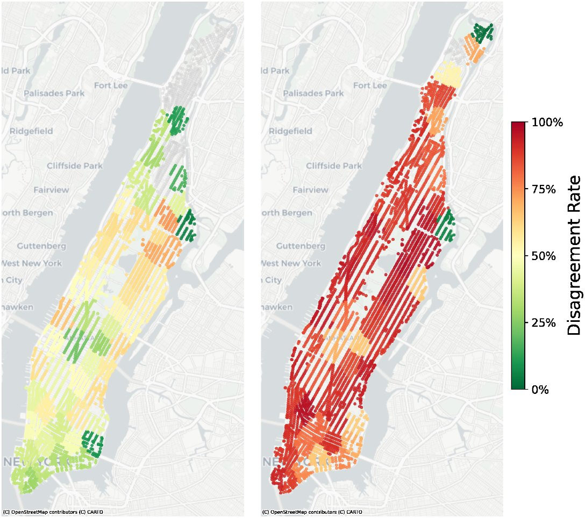

(full-size figure)Who should pick the meeting point? Efficiency–fairness trade-offs between operator and users in ridepooling
Transportation Research Part A: Policy and Practice, 215, 105326. Published online October 23, 2026.
When the platform and its passengers would pick different meeting points, who should decide? Across Manhattan, Utrecht, and Canberra, operator choice serves more requests, while passenger choice cuts walking per pick-up or drop-off leg roughly threefold. Disagreement is spatially concentrated, more frequent at drop-off, and weighs most on riders least willing to walk.
Paper Open access